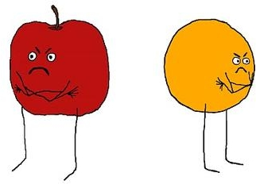

Migration in the Modern World
Nikola Sander
ICPG, Brisbane, July 2015
A rising tide of mass migration?
A topic rich in myths, lacking in facts.
For every 1,000 people, how many moved between 2005 and 2010?
Lack of comparable data on international migration flows
|
Differences in the way of measurement. Harmonisation of existing flow data beyond Europe is difficult. |
 |
Stock data on foreign-born are more widely available.
The UN released a global bilateral dataset in 2013.
But stocks are an accumulative measure and thus struggle to capture recent trends.
Estimating flows from stocks
UN stock datalifetime transitions static snapshot of 1990, 2000, 2010 ~220 countries |
➜ |
New flow estimates5-year transitions dynamic movements 1990-95 to 2005-10 196 countries |
Surprising results...
No rising tide of migration
For every 1,000 people, 6 moved internationally in 2005-10.

Visualising flows to gain insight into patterns and trends...
...by going beyond traditional flow maps...
Abel & Sander (2014)"Quantifying Global International Migration Flows". Science, vol. 343: 1520-1522.
How to read the circular migration plot...
Each region is assigned a colour.
The length of a circular segment shows a region's volume of migration in millions.
A flow's direction is shown by its colour and proximity to the circle.
Flows have the same colour as their origin. A wider gap indicates the flow’s destination.
Inflows and outflows are arranged based on size, from largest to smallest.
2005-10
What has changed since 1990?
1990-95
1995-2000
2000-05
2005-10
Outreach beyond scientific publications...
"The Global Flow of People"
Idea, design & implementation:
Nikola Sander and Ramon Bauer
d3.js coding: Null2 Berlin
Data: Guy Abel
Web design: Elvira Stein
Financial support: Vienna Institute of Demography
www.global-migration.info
Feedback via Twitter
"Fantastic visualization of global migration data. I'm on there if you zoom in a lot."
"This map showing the last 20 years of migration around the world definitely puts Australia's numbers into perspective"
Scientists should more actively engage in, inform and shape the dialogue on migration.
Data visualisation has the potential to enhance the impact and visibility of science.
Slides are available at nikolasander.com/icpg2015-plenary